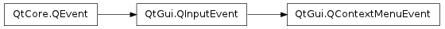

QContextMenuEvent ¶

Synopsis ¶
Detailed Description ¶
The PySide.QtGui.QContextMenuEvent class contains parameters that describe a context menu event.
Context menu events are sent to widgets when a user performs an action associated with opening a context menu. The actions required to open context menus vary between platforms; for example, on Windows, pressing the menu button or clicking the right mouse button will cause this event to be sent.
When this event occurs it is customary to show a PySide.QtGui.QMenu with a context menu, if this is relevant to the context.
Context menu events contain a special accept flag that indicates whether the receiver accepted the event. If the event handler does not accept the event then, if possible, whatever triggered the event will be handled as a regular input event.
- class PySide.QtGui. QContextMenuEvent ( reason , pos ) ¶
- class PySide.QtGui. QContextMenuEvent ( reason , pos , globalPos )
- class PySide.QtGui. QContextMenuEvent ( reason , pos , globalPos , modifiers )
-
Parameters: - reason – PySide.QtGui.QContextMenuEvent.Reason
- globalPos – PySide.QtCore.QPoint
- modifiers – PySide.QtCore.Qt.KeyboardModifiers
- pos – PySide.QtCore.QPoint
Constructs a context menu event object with the accept parameter flag set to false.
The reason parameter must be QContextMenuEvent.Mouse or QContextMenuEvent.Keyboard .
The pos parameter specifies the mouse position relative to the receiving widget.
The PySide.QtGui.QContextMenuEvent.globalPos() is initialized to QCursor.pos() , which may not be appropriate. Use the other constructor to specify the global position explicitly.
Constructs a context menu event object with the accept parameter flag set to false.
The reason parameter must be QContextMenuEvent.Mouse or QContextMenuEvent.Keyboard .
The pos parameter specifies the mouse position relative to the receiving widget. globalPos is the mouse position in absolute coordinates.
- PySide.QtGui.QContextMenuEvent. Reason ¶
-
This enum describes the reason why the event was sent.
Constant Description QContextMenuEvent.Mouse The mouse caused the event to be sent. Normally this means the right mouse button was clicked, but this is platform dependent. QContextMenuEvent.Keyboard The keyboard caused this event to be sent. On Windows, this means the menu button was pressed. QContextMenuEvent.Other The event was sent by some other means (i.e. not by the mouse or keyboard).
- PySide.QtGui.QContextMenuEvent. globalPos ( ) ¶
-
Return type: PySide.QtCore.QPoint Returns the global position of the mouse pointer at the time of the event.
- PySide.QtGui.QContextMenuEvent. globalX ( ) ¶
-
Return type: PySide.QtCore.int Returns the global x position of the mouse pointer at the time of the event.
- PySide.QtGui.QContextMenuEvent. globalY ( ) ¶
-
Return type: PySide.QtCore.int Returns the global y position of the mouse pointer at the time of the event.
- PySide.QtGui.QContextMenuEvent. pos ( ) ¶
-
Return type: PySide.QtCore.QPoint Returns the position of the mouse pointer relative to the widget that received the event.
- PySide.QtGui.QContextMenuEvent. reason ( ) ¶
-
Return type: PySide.QtGui.QContextMenuEvent.Reason Returns the reason for this context event.
- PySide.QtGui.QContextMenuEvent. x ( ) ¶
-
Return type: PySide.QtCore.int Returns the x position of the mouse pointer, relative to the widget that received the event.
- PySide.QtGui.QContextMenuEvent. y ( ) ¶
-
Return type: PySide.QtCore.int Returns the y position of the mouse pointer, relative to the widget that received the event.